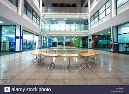
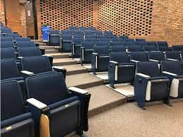
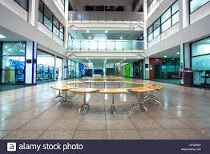
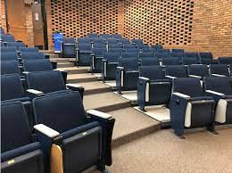

Our College Campus.....
 



Skylight is a research, community building, consultation and support unit advancing the science behind education. Skylight has facilitated institution-wide improvements in teaching and learning and helped position UBC as a leader among North American research universities in transforming science education.Skylight university as 'Institutes of National Importance'. Since then, university has grown from strength to strength to emerge as one of the top technical universities in the world. The institute is recognised worldwide as a leader in the field of engineering education and research.
Skylight identifies, plans, leads, and evaluates a wide range of science teaching and learning projects and initiatives with partners across and outside UBC. In partnership with CTLT and departments, we also lead the strategic management and enhancement of the learning technology ecosystem in the Faculty of Science..
College Official :
Skylight identifies, plans, leads, and evaluates a wide range of science teaching and learning projects and initiatives with partners across and outside UBC. In partnership with CTLT and departments, we also lead the strategic management and enhancement of the learning technology ecosystem in the Faculty of Science.